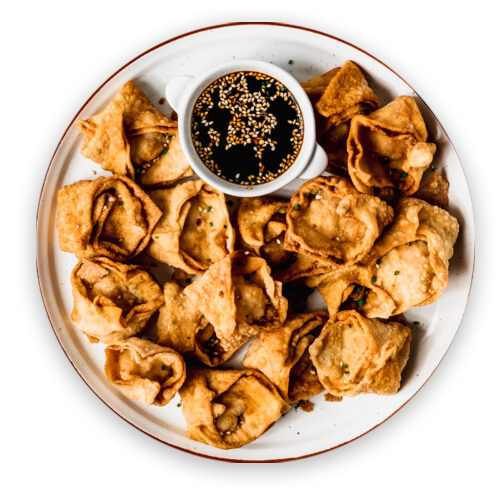

Wantán Frito
Crujientes bocaditos rellenos de carne de cerdo, servidos con salsa agridulce. S/11.90
Wantán Frito Relleno con Langostinos
Delicados bocados rellenos de langostinos, servidos con salsa de tamarindo. S/13.90
Sopa Wantán
Caldo aromático con wantanes rellenos de carne y cebolla china. S/10
Hakao (Dumplings de Camarón)
Suaves y jugosos dumplings de camarón al vapor. S/10
Sopa Pac Pow
Delicioso caldo con trozos de pollo, langostinos y verduras. S/12
Wantán en Salsa de Tamarindo
Wantanes crujientes bañados en una salsa agridulce con tamarindo. S/10
Rollitos Primavera
Fina masa rellena de vegetales y pollo, frita hasta dorar. S/8
Chijaukay
Pechuga de pollo empanizada y bañada en salsa de ajo y sillao. S/10
Costillas con Miel
Costillas de cerdo caramelizadas en salsa de miel y especias chinas. S/14
Koi Pa Kai
Costillas de cerdo caramelizadas en salsa de miel y especias chinas. S/13
Siu Mai al Vapor
Tradicionales bocados de cerdo y langostinos envueltos en masa delgada. S/13
Pato Crujiente con Salsa de Ciruela
Pato crocante servido con una dulce salsa de ciruela. S/19
